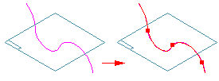

Split Curve command
Use the Split Curve command to split a construction curve. You can select keypoints, curves, reference planes, or surfaces as the elements which split the curve.

Splitting a construction curve can make it easier to construct other features, such as a bounded surface, a trimmed surface, a normal protrusion, or a normal cutout.
Note:
You cannot use the Split Curve command to split an edge on a model. You can use the Derived Curve command to create an associative copy of an edge on the model, and then use the Split Curve command to split the derived curve.